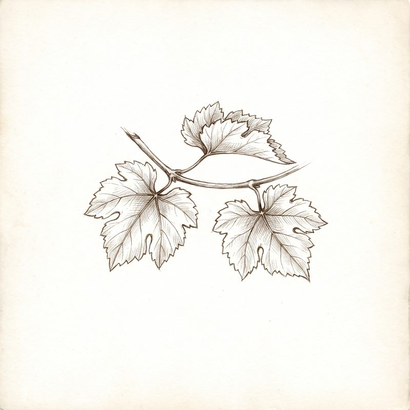

Vignobles du Haut-Médoc
Enquêteà la racine
L'enquête des trois châteaux
de la famille Miailhe
- Coufrandepuis 1924
- Verdignandepuis 1976
- Soudarsdepuis 1980
Dossier n° 1924-001
ConfidentielÀ l'attention de l'enquêteur
Cher enquêteur,
Ce matin, au chai, l'inventaire ne tombe pas juste : des bouteilles manquent. Aucun signe d'effraction, aucune note pour expliquer leur départ.
Les registres semblent en ordre, mais certains détails ne collent pas.
Pour comprendre, vous allez interroger trois générations, examiner la vigne, percer le secret de l'assemblage et croiser les registres. Chaque étape vous donne une lettre. Les six lettres ouvrent le dernier dossier de l'affaire.
Votre mission : découvrir quelles bouteilles ont disparu, où elles sont parties, et pourquoi.
Bonne enquête.
La famille Miailhe

Enquêteur chargé du dossier
Déjà inscrit ? Reprendre ma partie
Dix à quinze minutes, sur téléphone ou ordinateur. Des indices se cachent aussi sur les sites des trois châteaux.